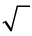

Hoofstuk 2
Heelgetalle
In hierdie hoofstuk sal jy met getalle kleiner as 0 werk. Hierdie getalle word negatiewe getalle genoem. Hulle het spesiale eienskappe wat hulle nuttig maak vir spesifieke doeleindes, byvoorbeeld om ons in staat te stel om ’n vergelyking soos \(x + 20 = 10\) op te los.
2.1 Watter getalle is kleiner as 0?
WAAROM MENSE BESLUIT HET OM NEGATIEWE GETALLE TE HÊ
Getalle soos -7 en -500, die optellingsinverses van telgetalle, word negatiewe getalle genoem.
Breuke kan ook negatief wees, bv.- \(\frac{3}{4}\) en \(-3,46\).
Die natuurlike getalle (1; 2; 3; 4; ...) word gebruik om te tel, en breuke (rasionale getalle) word gebruik om te meet. Waarom het ons ook negatiewe getalle?
Wanneer ’n groter getal van ’n kleiner getal afgetrek word, kan die antwoord ’n negatiewe getal wees: \( 5 - 12 = -7\), en hierdie getal word negatief 7 genoem.
Een van die belangrikste redes vir die uitvinding van negatiewe getalle was om oplossings te verskaf vir vergelykings soos hierdie:
|
Vergelyking |
Oplossing |
Verlangde eienskap van negatiewe getalle |
|
\(17 + x = 10\) |
\(x = -7\) want \(17 + (-7) = 17 - 7\) \(= 10\) |
1. Om ’n negatiewe getal by te tel, is dieselfde as om die ooreenstemmende positiewe getal af te trek. |
|
\(5 -x = 9\) |
\(x=-4\) want \(5 -(-4) = 5 + 4\) = 9 |
2. Om ’n negatiewe getal af te trek, is dieselfde as om die ooreenstemmende positiewe getal by te tel. |
|
\(20 + 3x = 5\) |
\( x =-5\) want \(3 \times (-5) = -15\) \(20 + (-15)=5\) |
3. Die produk van ’n positiewe getal en ’n negatiewe getal is ’n negatiewe getal. |
EIENSKAPPE VAN HEELGETALLE
-
Bepaal die getal wat die vergelyking waar maak. Sê ook watter van die eienskappe van heelgetalle in die tabel hier bo op die vergelyking van toepassing is.
-
\(20 - x = 50\)
-
\(50 + x = 20\)
-
\(20 - 3x = 50\)
-
\(50 + 3x = 20\)
-
2.2 Optel en aftrek met heelgetalle
Optel en aftrek van negatiewe getalle
Voorbeelde: \((-5) + (-3)\) en \((-20) - (-7)\)
Dit word op dieselfde manier gedoen as optel en aftrek van positiewe getalle.
\((-5) + (-3)\) kan ook geskryf word as \(-5 + (-3)\) of as \(-5 + -3\)
\((-5) + (-3) = -8\) en \(-20 - (-7) = -13\)
Dit is net soos \(5 + 3 = 8\) en \(20 - 7 =13\), of \(\text{R}5 + \text{R}3 = \text{R}8\), en \(\text{R}20 - \text{R}7 = \text{R}13\).
Trek ’n groter getal van ’n kleiner getal af
Voorbeelde: \(5 - 9\) en \(29 - 51\)
Kom ons beskou eers die volgende:
\(5 + (-5) = 0\) \(10 + (-10) = 0\) en \(20 + (-20) = 0\)
Kyk nou na \(5 - 5 = 0\), As ons 5 van 5 aftrek, kry ons 0, maar dan moet ons nog 4 aftrek.
Ons weet dat \(-9 = (-4) + (-5)\)
\[\begin{align} 5 - 9 &= \underbrace{5 - 5} - 4 \\ &= 0 - 4 \\ &= -4 \end{align}\]
Gestel die getalle is groter, byvoorbeeld bv. \(29 - 51\):
\(29 - 51 = 29 - 29 - 22\)
\(-51 = (-29) + (-22)\)
Hoeveel sal oor wees van die 51 wat nog afgetrek moet word, nadat jy 29 van 29 afgetrek het om 0 te kry?
Hoe kan ons uitvind? Is dit 51 − 29?
Tel ’n positiewe en ’n negatiewe getal bymekaar
Voorbeelde: \(7 + (-5); 37 + (-45)\) en \((-13) + 45\)
Die volgende bewering is waar indien die getal 5 is:
\(20 - (\textit{’n bepaalde getal}) = 15\)
Ons het ook getalle nodig wat sinne soos die volgende waar sal maak:
\(20 + (\textit{’n bepaalde getal}) = 15\)
Maar om van 20 tot by 15 te kom, moet jy 5 aftrek.
Die getal wat ons nodig het om die sin \(20 + (\textit{’n bepaalde getal) = 15}\) waar te maak, moet die volgende vreemde eienskap hê:
As jy hierdie getal bytel moet dit dieselfde effek hê as om 5 af te trek.
Wiskundiges het dus ooreengekom dat die getal wat negatief 5 genoem word, die eienskap sal hê dat as jy dit by ’n ander getal tel, die effek dieselfde sal wees as wanneer jy die natuurlike getal 5 aftrek..
Dit beteken dat wiskundiges ooreengekom het dat \(20 + (-5)\) gelyk is aan \(20 - 5\).
Anders gestel, in plaas daarvan om negatief 5 by ’n getal by te tel, kan jy 5 aftrek.
Om ’n negatiewe getal by te tel, het dieselfde effek as om ’n ooreenstemmende natuurlike getal af te trek.
Voorbeelde: \(20 + (-15) = 20 - 15 = 5\).
Trek ’n negatiewe getal af
Ons het op die vorige bladsy te doen gehad met gevalle soos \(-20 - (-7)\) .
Die bewering
\(25 + (\textit{’n bepaalde getal}) = 30\)
is waar indien die getal 5 is.
As jy hierdie getal aftrek, moet dit dieselfde effek hê as om 5 by te tel.
Daar is ooreengekom dat \(25 - (-5)\) gelyk is aan \(25 + 5\)
In plaas daarvan om die negatiewe getal af te trek, word die ooreenstemmende positiewe getal (die optellingsinverse) bygetel.
\[ \begin{align}8 - (-3) &= 8 + 3 \\ &= -11 \end{align}\]
\[ \begin{align} -5 - (-12) &= -5 + 12 \\ &=-7 \end{align}\]
Ons kan sê dat vir elke “positiewe” getal daar ’n ooreenstemmende of teenoorgestelde negatiewe getal is. ’n Positiewe en ’n negatiewe getal wat ooreenstem, byvoorbeeld 3 en (−3), word optellingsinverses.
Trek’n positiewe getal van ’n negatiewe getal af
Voorbeeld: \(-7 - 4\) beteken in werklikheid \((-7) - 4\).
In plaas daarvan om ’n positiewe getal af te trek, kan die ooreenstemmende negatiewe getal bygetel word.
\(-7 - 4\) kan beskou word as \((-7) + (-4) = -11\)
BEREKENINGE MET HEELGETALLE
Bereken.
- \(-7 + 18\)
- \(24 - 30 - 7\)
- \(-15 + (-14) - 9\)
- \(35 - (-20)\)
- \(30 - 47\)
- \((-12) - (-17)\)
2.3 Vermenigvuldiging en deling met heelgetalle
VERMENIGVULDIG MET HEELGETALLE
-
Bereken.
-
\(-7 + -7 + -7 + -7 + -7 + -7 + -7 + -7 + -7 + -7\)
-
\(-10 + -10 + -10 + -10 + -10 + -10 + -10\)
-
\(10 \times (-7)\)
- \(7 \times (-10)\)
-
-
Sê of jy met elke bewering saamstem (✓) or (✗) of nie saamstem nie
-
\(10 \times (-7) = 70\)
-
\(9 \times (-5) = (-9) \times 5\)
-
\((-7) \times 10 = 7 \times (-10)\)
-
\(9 \times (-5) = -45\)
-
\((-7) \times 10 = 10 \times (-7) \)
-
\( 5 \times (-9) = 45\)
-
Vermenigvuldiging van heelgetalle is kommutatief:
\((-20) \times 5 = 5 \times (-20)\)
DIE VERSPREIDINGSEIENSKAP
-
Bereken elkeen van die volgende. Let daarop dat hakies om twee redes in hierdie uitdrukkings gebruik word: om aan te dui dat bepaalde bewerkings eerste gedoen moet word, en om die heelgetalle aan te toon.
- \( 20 + (-5)\)
\( 4 \times (20 + (-5))\)-
\( 4 \times 20 + 4 \times (-5)\) - \( (-5) + (-20)\)
- \(4 \times ((-5) + (-20))\)
\(4 \times (-5) + 4 \times (-20)\)
As jy reg gewerk het, moet jou antwoorde vir vraag 1 die volgende wees: 15; 60; 60; -25; -100 en -100. As jou antwoorde verskil, kyk waar dinge verkeerd geloop het en maak jou werk reg.
Kyk hoeveel van die volgende jy kan bereken:
-
\( 20 + (-15)\)
\( 4 \times ((20 + (-15))\)
\(4 \times 20 + 4 \times (-15)\)
-
\((-15) + (-20)\)
\(4 \times ((-15) + (-20))\)
-
\(4 \times (-15) + 4 \times (-20)\)
-
\( 10 + (-5)\)
-
\((-4) \times (10 + (-5))\)
-
\((-4) \times 10 +
((-4) \times
(-5))\)
Watter eienskap van heelgetalle word in jou antwoorde vir vraag 3(a) en 3(g) gebruik?
Verduidelik jou antwoord.
In vraag 3(i) moes jy twee negatiewe getalle vermenigvuldig. Wat was jou raaiskoot?
Ons kan \((-4) \times (10 + (-5))\) soos in (h) bereken. Dit is \((-4) \times 5 = -20\)
As ons wil hê die verspreidingseienskap moet waar wees vir heelgetalle, dan moet \((-4) \times 10 + (-4) \times (-5)\) gelyk wees aan \(-20\).
\((-4) \times 10 + (-4) \times (-5) = -40 + (-4) \times (-5)\)
Dat moet \((-4) \times (-5)\) gelyk wees aan \(20\).
Bereken:
-
\( 10 \times 50 + 10 \times (-30)\)
-
\(50 + (-30)\)
-
\(10 \times (50 + (-30))\)
-
\( (-50) + (-30)\)
-
\( 10 \times (-50) + 10 \times (-30) \)
-
\( 10 \times ((-50) + (-30)) \)
- Die produk van twee positiewe getalle is ’n positiewe getal, byvoorbeeld \(5 \times 6 = 30\).
- Die produk van ’n positiewe getal en ’n negatiewe getal is ’n negatiewe getal, byvoorbeeld \(5 \times (-6) = -30\).
- Die produk van ’n negatiewe getal en ’n positiewe getal is ’n negatiewe getal, byvoorbeeld \((-5) \times 6 = -30\).
-
Onderstreep die numeriese uitdrukkings hier onder wat jy verwag dieselfde antwoorde sal hê. Moenie die berekeninge doen nie.
\(16 \times (53 + 68)\) \(53 \times (16 + 68)\) \(16 \times 53 + 16 \times 68\) \(16 \times 53 + 68\)
-
Watter eienskap van bewerkings word gewys deur die feit dat twee van die uitdrukkings hier bo dieselfde waarde het?
Beskou jou antwoorde op vraag 5.
-
Versprei vermenigvuldiging oor optel in die geval van heelgetalle?
-
Illustreer jou antwoord met twee voorbeelde.
Onderstreep die numeriese uitdrukkings hier onder wat jy verwag dieselfde antwoorde sal hê. Moenie nou die berekeninge doen nie.
\(10 \times ((50) -(-30))\) \( 10 \times (50) (30)\) \(10 \times (-50) - 10 \times (-30)\)
Doen die drie stelle berekeninge wat in vraag 8 gegee is.
Bereken \((-10) \times (5 + (-3))\).
Dink oor die vraag of vermenigvuldiging met ’n negatiewe getal oor optel en aftrek van heelgetalle versprei. Sal \((-10) \times 5 + (-10) \times (-3)\) byvoorbeeld ook die antwoord \(-20\), hê, soos \((-10) \times (5 + (-3))\)?
Om seker te maak dat vermenigvuldiging oor optel en aftrek in die stelsel van heelgetalle versprei, moet ons ooreenkom dat
\({\bf\text{(’n negatiewe getal)} \times \text{(’n negatiewe getal)’n positiewe getal is}}\),
byvoorbeeld \((-10) \times (-3) = 30\).
Bereken elkeen van die volgende:
-
\((-20) \times (-6)\)
-
\((-20) \times 7\)
-
\((-30) \times (-10) + (-30) \times (-8)\)
-
\((-30) \times ((-10) +(-8))\)
-
\((-30) \times (-10) - (-30) \times (-8)\)
-
\((-30) \times ((-10) - (-8))\)
Hier is ’n opsomming van die eienskappe van heelgetalle wat dit moontlik maak om berekeninge met heelgetalle te doen:
- Wanneer ’n getal by sy optellingsinverse getel word, is die resultaat 0, byvoorbeeld (+12) + (-12) = 0.
- Om ’n heelgetal by te tel het dieselfde effek as om sy optellingsinverse af te trek, byvoorbeeld 3 + (-10) kan bereken word deur 3 − 10 te bereken, en die antwoord is −7.
- Om ’n heelgetal af te trek het dieselfde effek as om sy optellingsinverse by te tel, byvoorbeeld 3 - (-10) kan bereken word deur 3 + 10 te bereken as 13.
- Die produk van ’n positiewe heelgetal en ’n negatiewe heelgetal is negatief, byvoorbeeld \((-15) \times 6 = -90\).
- Die produk van ’n negatiewe heelgetal en ’n negatiewe heelgetal is positief, byvoorbeeld \((-15) \times (-6) = 90\).
DEEL MET HEELGETALLE
-
Bereken.
-
\(5 \times (-7) \)
-
\((-3) \times 20\)
-
\((-5) \times (-10)\)
-
\((-3) \times (-20)\)
-
-
Gebruik jou antwoorde in vraag 1 om die volgende te bepaal:
-
\((-35) \div 5 \)
-
\((-35) \div (-7)\)
-
\( (-60) \div 20\)
-
\((-60) \div (-3)\)
-
\(50 \div (-5)\)
-
\(50 \div\) (-10)
-
\(60 \div (-20)\))
-
\( 60 \div (-3)\)
-
- Die kwosiënt van ’n positiewe getal en ’n negatiewe getal is ’n negatiewe getal.
- Die kwosiënt van twee negatiewe getalle is ’n positiewe getal.
GEMENGDE BEREKENINGE MET HEELGETALLE
-
Bereken.
- \( 20(-50 + 7)\)
- \( 20 \times (-50) + 20 \times 7\)
- \(20(-50 + -7)\)
- \(20 \times (-50) + 20 \times -7\)
- \(-20(-50 + -7) \)
- \( -20 \times -50 + -20 \times -7\)
Bereken
-
\(40 \times (-12 + 8) -10 \times (2 + -8) - 3 \times (-3 - 8)\)
-
\((9 + 10 - 9) \times 40 + (25 - 30 - 5) \times 7\)
-
\(-50(40 - 25 + 20) + 30(-10 + 7 + 13)- 40(-16 + 15 - 2)\)
-
\(-4 \times (30 - 50) + 7 \times (40 - 70) - 10 \times (60 - 100)\)
-
\(-3 \times (-14 - 6 + 5) \times (-13 - 7 + 10) \times (20 - 10 - 15)\)

2.4 Magte, wortels en woordprobleme
Beantwoord al die vrae in hierdie afdeling sonder om ’n sakrekenaar te gebruik.
-
Voltooi die tabelle.
-
x
1
2
3
4
5
6
7
8
9
10
11
12
\(x^{2}\)
\(x^{3}\)
-
x
-1
-2
-3
-4
-5
-6
-7
-8
-9
-10
-11
-12
\(x^{2}\)
\(x^{3}\)
-
-
Bereken die volgende:
-
\(\sqrt{4} - \sqrt{9}\)
-
\(\sqrt[3]{27} +(- \sqrt[3]{64})\)
-
-\((3^{2})\)
-
\((-3) ^{2}\)
-
\(4^{2} - 6^{2} + 1^{2}\)
-
\(3^{3}- 4^{3}- 2^{3} -1^{3}\)
-
\(\sqrt{81} - \sqrt{4} \times \sqrt[3] {125}\)
- -\((4^{2})(-1) ^{2}\)
- \(\frac{(-5) ^2}{\sqrt{37 - 12}}\)
- \(\frac{-\sqrt{36}}{-1^{3} - 2^{3}}\)
-
-
Bepaal die antwoorde van die volgende:
-
Die oornagtemperatuur in Polokwane daal van 11°C tot -2°C. Met hoeveel grade het die temperatuur gedaal?
-
Die temperatuur in Estcourt daal van 2 °C tot -1 °C in een uur, en dan nog twee grade in die volgende uur. Hoeveel grade het die temperatuur in totaal oor die twee uur gedaal?
-
’n Duikboot is 75 m onder die see-oppervlak. Dit kom dan 21 m op. Hoe ver onder die oppervlak is dit nou?
-
’n Duikboot is 37 m onder die see-oppervlak. Dit duik dan ’n verdere 15 m dieper. Hoe ver onder die oppervlak is dit nou?
-
Die simbool  beteken dat jy die positiewe vierkantswortel of the number.
\(3^{2}\) is 9 en \((-3)^{2}\) is ook 9.
\(3^{3}\) is 27 en \((-5)^{3}\) is −125. Beide (−3) en 3 is vierkantswortels van 9. 3 kan die positiewe vierkantswortel van 9 genoem word, en (−3) kan die negatiewe vierkantswortel van 9 genoem word. 3 word die derdemagswortel van 27 genoem, want \(3^{3}\) = 27. −5 word die derdemagswortel van −125 genoem, want \((-5)^{3}\) = −125. \(10^{2}\) is 100 en \((−10)^{2}\) is ook 100. Beide 10 en (-10) word vierkantswortels van 100 genoem.